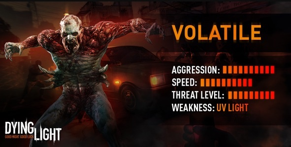

Night Hunter
The Volatile is an infected that only emerges during the night.[2] Most infected are easily killed 1 on 1, However, this is not the case with Volatiles, and the player's best option is always to run when spotted, as they are able to take several hits from high powered weapons and cause quick bursts of damage.
Volatiles are broad-shouldered and slightly taller than the average Biter. Other physical markers include full-bodied nudity, exposed bone and muscle and a mandible jaw that are used against non-infected humans. They can audibly be identified by their heavy breathing and loud screeches. Volatiles are extremely fast; they can navigate through the dark at high speeds and can match the agility of the player, scaling obstacles and buildings in the same manner.[3] They have a special pounce attack that is impossible for low-level players to escape from, resulting in their immediate death. Players at higher levels with the appropriate skill can shake the attack off relatively easily, but the Volatile will often pounce again soon after. In the event that a Volatile can see a player but not reach them, they will use a powerful spit attack similair to a Toad.
When it gets to day, Volatiles will become frightened and in pain, they will start running to the nearest dark zone, such as a tunnel. While running for shade, Volatiles will always ignore the player even if they attack them, however, if they are in a dark zone, they will become hostile as they are at night.